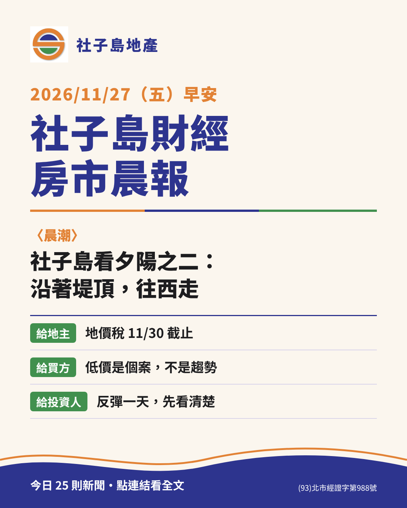

2026/11/27 (五) 早安
社子島財經房市晨報｜社子島看夕陽之二：沿著堤頂，往西走
台北市今年最便宜的預售新案，單價跌回 6 字頭，北投、文山甚至出現 5 字頭；房價是真的鬆了，還是只是個案？經濟日報和地產天下都在問。同一天，台南一片魚塭、高雄一塊 4.5 萬坪的眷村和體育場用地，都朝市地重劃往前走。週五是我們談市地重劃的日子，〈今日一題〉就來說，重劃後地主到底分回多少。主商圈這兩天沒有新的官方進度；〈晨潮〉帶阿公去找福安碼頭以外的夕陽。週五早上，25 則新聞，點標題就能讀原文。
〈潮汐表〉今天的三道潮水
- 給地主地價稅下週一（11/30）截止，還沒繳的，這個週末記得繳。
- 給買方北市新案最低單價回到 6 字頭，但主力仍在每坪百萬上下，個案別急著當趨勢。
- 給投資人股匯反彈一天，外資仍連 9 天賣超，先看清楚再動。
〈晨潮〉系列連載
社子島看夕陽之二：沿著堤頂，往西走
昨天在坤天亭，阿公想起當年割稻割到黃昏，問我們：「這馬咱社子島，除了福安碼頭，佗位看日頭落山上媠？」阿公，福安碼頭我們 11 月 16 日寫過，島頭公園 11 月 20 日也去過了。今天換個走法，不找一個點，找一條線。
這條線，就是堤頂。社子島四周圍著堤防，市府在堤頂上鋪了自行車道，可以繞島一圈。看夕陽，要站在淡水河那一側：河面朝西，對岸遠遠的山影就是觀音山。台北旅遊網介紹社子島時寫道，黃昏時夕陽讓河面閃閃發光，遠處是觀音山與大屯山；也有媒體形容，夕陽時分，觀音山、關渡平原和台北的天際線會連成一片。
走在堤頂，好處是不用搶位置。騎車的人可以邊騎邊停，走路的人找一段沒有樹擋的堤，就是自己的看台。退潮的時候，往堤外看，濕地上會露出泥灘，台北旅遊網也提到，島頭一帶退潮後能看到招潮蟹探頭。夕陽、泥灘、招潮蟹，一次看齊。
堤頂看夕陽小抄
- 方向｜站淡水河側，面向西邊，遠處是觀音山
- 路線｜堤頂自行車道可繞島一圈，走一段、騎一段都可以
- 加分｜退潮時看濕地泥灘與招潮蟹
- 提醒｜冬天天黑早，早點出門、帶外套；部分路段燈光少
另外，常在這裡騎車的朋友也會分享沿途跨堤的人行陸橋，站高一點，河面和天空都更開闊。去之前，請先確認開放與施工狀況。冬天天黑得早，建議傍晚早一點出門，帶件外套；堤頂沒有路燈的路段，回程記得放慢腳步。
阿公說，以前割稻割到黃昏，規片田攏紅紅。今天的社子島，田少了，但那片紅還在河面上。這條堤，是守護島上的人蓋的；未來規劃裡，堤會變成什麼樣子，我們會一直跟著看。最後在〈廟口泡茶區〉，阿公在等您。
——社子島地產團隊
〈今日一題〉
魚塭變建地：市地重劃後，地主分回多少？
先看兩則新聞。地產天下報導，台南安南區海尾寮一帶的朝皇市地重劃計畫已獲內政部核定，涉及約 400 位地主，未來會新增約 1.77 萬坪住宅建地，周邊已完成重劃的建地開價每坪約 30 萬元。高雄則規劃把左營約 4.5 萬坪的舊眷村與體育場用地，以公辦市地重劃整合，主打科技研發與企業辦公，還要送內政部都委會審議。
市地重劃，地主最常問的一句話是：「我的地會不會變少？」會。重劃要開路、做公園、埋管線，這些公共設施用地和工程費、重劃費用，由區內地主按比例共同負擔，費用部分通常用「抵費地」折抵。依《平均地權條例》第 60 條，共同負擔以重劃區總面積的 45% 為上限。也就是說，地主分回的面積通常比原本少，但分回的是臨路、有公共設施、可以建築的土地。
那划不划算？要看兩件事：重劃前後的地價差多少，以及分回的位置和形狀好不好用。台南這案，周邊重劃完成的建地開價約每坪 30 萬元，是很多地主願意走重劃的原因；但每塊地分回的位置、面積和時程，都要等重劃計畫書與分配結果公告，個別地主的情況不能用平均數直接套。
跟社子島有什麼關係？社子島走的是區段徵收，不是市地重劃：區段徵收可選抵價地或現金，抵價地比例原則 50%、不得少於 40%（《土地徵收條例》第 39 條）；市地重劃則只分回土地。兩種制度的差別，我們 11 月 6 日寫過，歡迎回頭看。關渡、洲美平原未來會用哪一種方式開發，目前還沒有定案；不論哪一種，先弄清楚自己的持分、面積和共有人，都是第一步。
資料：自由時報地產天下 2026-11-26 台南朝皇重劃、高雄左營重劃報導（搜尋摘要）；《平均地權條例》第 60 條、《土地徵收條例》第 39 條。解讀為本團隊意見，不構成投資或法律建議。
大台北：台北市・新北市・基隆4 則
北市今年預售最低單價回到 6 字頭，北投、文山也有 5 字頭，但成交主力仍在每坪 100～120 萬元；自由財經點出北市「老屋孤島」變多；民間版都更合約上路，估價師提醒地主兩個盲區；林口一家上市公司三年前就踩煞車不買地
其他縣市：台南・高雄（離台北由近到遠）4 則
台積電光環下，南部房市也在修正：南科兩大熱區交易量近腰斬、高雄楠梓有人轉手賠 255 萬；但打房前買在低點的高雄建案，解約只有個位數；台南東橋 218 戶社宅開放，最低月租 5,660 元
稅務與法律實務4 則
地價稅下週一（11/30）截止，逾期每 3 天加 1% 滯納金；兩則國稅局案例都和「生前安排」有關：生前贈與沒申報、繼承公設保留地，結果都要補大錢；外籍配偶有居留證，也能適用自住稅率
土地・市地重劃3 則
台南安南朝皇重劃案獲內政部核定，約 400 位地主；高雄左營 4.5 萬坪公辦市地重劃，還要送內政部都委會審議（詳見〈今日一題〉）；國產署把河口、濕地旁的邊際國有地交給環保團體認養，守護冬候鳥
全台房市・政策5 則
華銀看明年房市「量穩價微修」；李同榮說明年股市和房市會綁得更緊；國建明年迎完工交屋潮；內政部明年 1 月邀 22 縣市首長，一起談都更審議慢、社宅需求不同的問題；想多一房，價差愈拉愈大
生活與天氣2 則
今天多雲到晴、白天回暖，早晚仍涼；週末東北季風再增強但偏乾，之後轉晴。冷風從哪裡鑽進屋子，地產天下教您四招
今日財經大事3 則
台股昨天反彈 956.38 點、收 39,151.81 點，外資仍連 9 天賣超；新台幣升 1.79 角、收 32.947 元，回到 32 元字頭；美國 301 調查擬對台灣課 15% 關稅，政院表示不擔心；美股感恩節休市
〈阿公講古〉
週五傍晚，威靈廟前的廟埕，天光慢慢暗下來。阿公把報紙折好，放在腿上。
「台南遐的魚塭欲重劃，四百外个地主。」阿公搖搖頭又笑了，「重劃，阮知影是愛提一寡地出來開路、做公園。」
他看著廟前的路，想了一下。
「毋過，地分轉來比原本較細，人講地價會起，敢真正有較好？若是分著的位所，比原本較歹用，欲按怎？」
阿公的問題，我們明天回答。
〈廟口泡茶區〉
阿公在威靈廟前問起重劃後分回的地。土地變小、價值變高，划不划算，要一筆一筆算給您看。
市地重劃要負擔多少、分回在哪裡、重劃前該不該賣，每一步都和您的面積、位置與共有人有關；這一段，我們陪您一起看。
也想問問您：您在社子島最喜歡在哪裡看夕陽？打個電話告訴我們，說不定就寫進晨報。
不急著成交。我們是守在堤邊的人，守著每一塊土地的權益，直到把它交到願意耕耘它的人手上。
📞 歡迎先來電 0922-252-969先通個電話聊聊，再約時間來廟口喝茶。
 掃描 QR code，加 LINE 好友LINE ID：@shezidao💬 加 LINE
掃描 QR code，加 LINE 好友LINE ID：@shezidao💬 加 LINE
社子島地產團隊｜service@shezidao.com.tw
台北市士林區延平北路九段288號
週一至週六 9:30–18:00（週四 9:30–13:30），週日公休📞 來電 0922-252-969
本站由社子島地產開發有限公司經營，為民間不動產資訊網站，非臺北市政府官方網站；政府公告請以臺北市政府與地政局網站為準。
本期新聞由社子島地產團隊自中央社、自由財經、自由時報地產天下、udn房地產、經濟日報、聯合新聞網、工商時報、壹蘋新聞網 等來源收集，標題照原文，點擊即可開啟原始報導；新聞依「主商圈 → 大台北 → 其他縣市（離台北由近到遠）→ 稅務與法律實務 → 土地 → 全國主題」排列，當天沒有新報導的分類不列出。〈晨潮〉觀音山、大屯山景觀與招潮蟹描述依臺北旅遊網社子島介紹及媒體報導（搜尋摘要，雲端未能開啟全部原頁）；未寫具體日落時刻。〈今日一題〉重劃案資料取自自由時報地產天下報導，法條依《平均地權條例》第 60 條、《土地徵收條例》第 39 條，解讀為本團隊意見。〈晨潮〉〈今日一題〉〈阿公講古〉為本團隊之參考意見，不構成投資或法律建議，亦不代表支持任何候選人。〈阿公講古〉的阿公，是我們依島上長輩的身影寫成的人物。